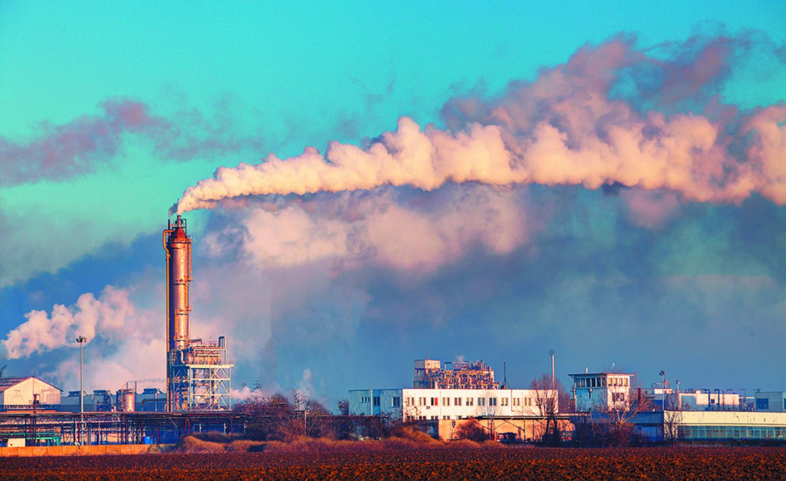
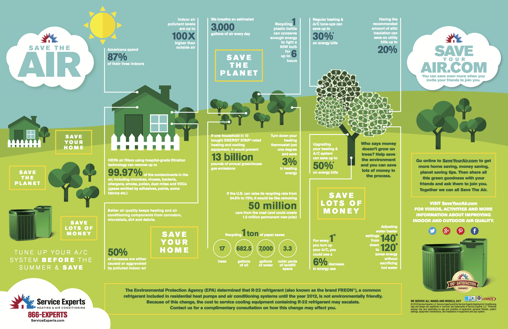

What is water polution?
Water pollution occurs when harmful substances—often chemicals or microorganisms—contaminate a stream, river, lake, ocean,
aquifer, or other body of water,degrading water quality and rendering it toxic to humans or the environment.
Read More
How to prevent water pollution?
If you want to help keep our waters clean, there are many things you can do to help. You can prevent water pollution of nearby rivers and lakes as well as groundwater and drinking water by following some simple guidelines in your everyday life.
Read More

What is air pollution?
Air pollution occurs when harmful or excessive quantities of substances are introduced into Earth's atmosphere. Sources of air pollution include gases, particulates, and biological molecules. It may cause diseases, allergies and even death to humans; it may also cause harm to other living organisms such as animals and food crops, and may damage the natural or built environment. Both human activity and natural processes can generate air pollution.
Read More

How to prevent air pollution?
When you think of air pollution, you most likely don’t conjure up images of the inside of your home or office. But because we spend so much time indoors — especially in colder weather — keeping the air quality as clean as possible in your home, car and workplace is important for your health.
Read More